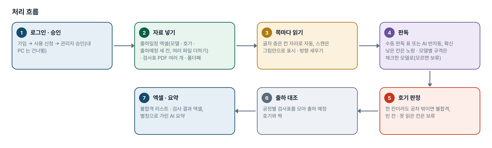
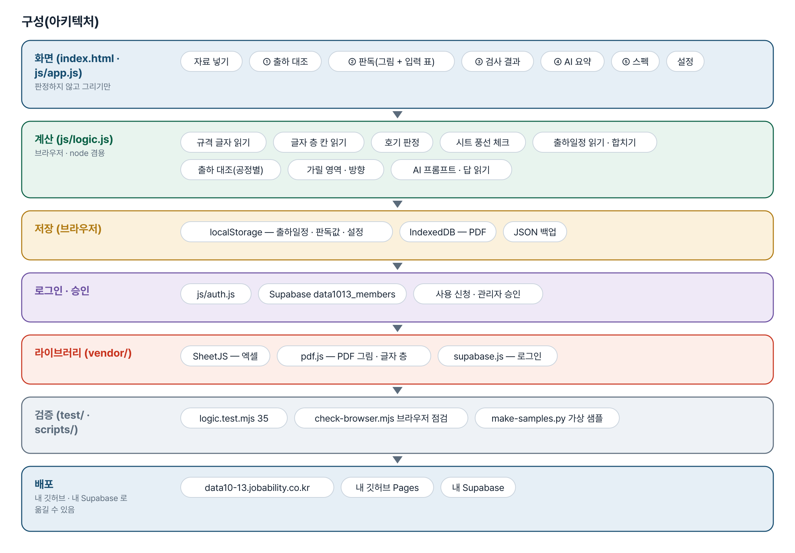
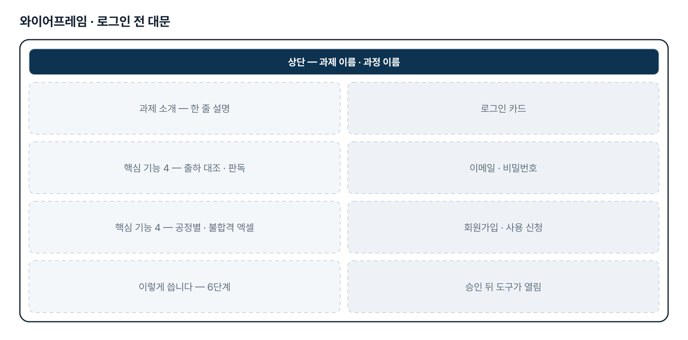
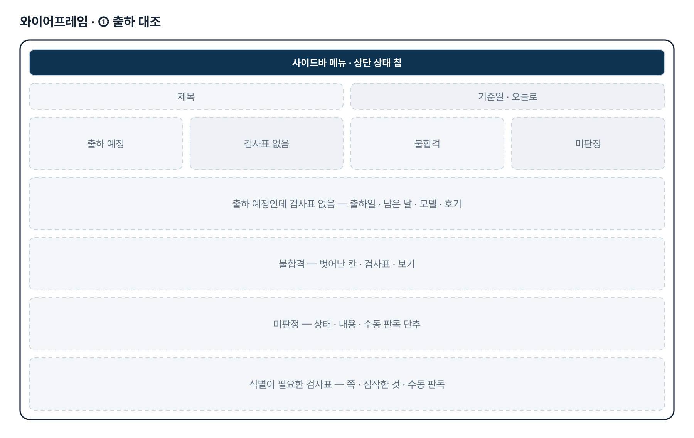
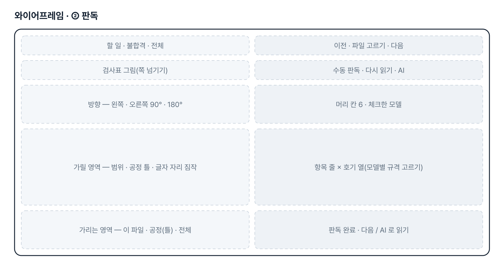
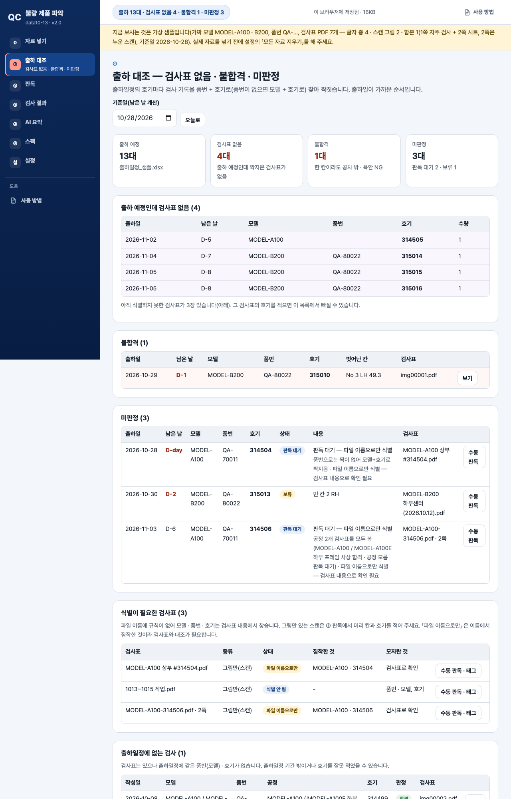

기획서 내려받기
파이프라인 · 아키텍처 · 와이어프레임 · 개발일지가 들어간 워드 문서입니다. 버전마다 따로 남깁니다.
| 버전 | 날짜 | 바뀐 점 | 파일 |
|---|---|---|---|
| v2.4 | 2026-11-10 | 4차 요청 반영 — 가릴 영역 틀 2가지(① 제작 · 가공형 4칸 = 결재 위 · 검사자 · 개정 확인란 · 결재 아래, ② 상단 결재란 1칸형 = 시트 · 각장 · 비용접구간), 공정명으로 자동 · 설정에서 바꾸기, 글자 층 쪽은 낱말 자리로 짐작 / 출하일정은 「모델 · 호기 · 출하예정」 세 칸만 읽기(소형 · 대형 · 초대형 모두, 나머지 칸은 무시 · 알림 없음) / 한 칸에 모델별 규격이 둘 — 모델명 칸의 체크 표시로 모델을 알아내 그 규격으로 판정, 모르면 그 칸 보류 · 판독 화면에서 모델이나 규격을 고름 / 판 2026-11-10.8 | 워드 내려받기 |
| v2.0 | 2026-11-10 | 최종 기획서 — 파이프라인 · 아키텍처 · 와이어프레임 정리 / 로그인 · 사용 신청 · 관리자 승인(요청자 Supabase 로 옮길 수 있게) / 로그인 전 대문 / 요청자 답 반영 — 측정값 OK · 시트 풍선 체크, 초대형 출하일정 · 파일 더하기, 한 PDF 여러 쪽 · 공정별 판정 / 추가 요청 반영 — PDF(쪽)별 가릴 영역, 수동 판독 단추, 90° · 180° 돌리기 | 워드 내려받기 |
요구사항과 구현
| 기획서 요구 | 구현 |
|---|---|
| 업로드 · 검사 누락 | 출하일정 호기마다 품번 + 호기(없으면 모델 + 호기)로 검사표와 짝 → 검사표 없음 · 미판정 목록, 식별이 필요한 검사표 |
| 불합격 제품 리스트 | 호기 · 칸(No + LH/RH) 단위, 검사표에 적힌 규격으로 판정, 엑셀 8개 시트 |
| 수기 PDF 분석 | 글자 층이 있으면 자동, 스캔은 수동 판독 표 + AI 반자동(그림 받기 · 프롬프트 · 답 붙여 넣기). 브라우저 안 손글씨 자동 인식은 하지 않음 |
| 합불 엑셀 리스트 정리 | 불합격_리스트 · 검사_결과 · 측정값_전체 · 출하_대조 등 엑셀 내보내기 |
| 측정값은 실측값 또는 OK, 시트는 풍선 체크(11-10 답 ①) | 수치 칸의 OK 는 합격, 시트 공정은 「부착 확인」 — OK 또는 「체크 수/풍선 수」 |
| 출하일정 파일 여러 개 · 초대형 형식(11-10 답 ③) | 「출하예정」 · 두 줄 머리 · 연도 없는 「월/일」 읽기, 파일 더하기, 모델 이름이 조금 달라도 같은 호기 짝 · 4차부터 모델 · 호기 · 출하예정 세 칸만 읽음 |
| 한 PDF 에 여러 호기 · 여러 공정(11-10 답 ④) | 쪽마다 검사표 한 장, 같은 호기의 공정별 검사표를 모두 보고 판정 |
| PDF 마다 가릴 위치 따로(추가 요청) | 이 파일 · 쪽만 > 공정 기본(직접 그린 것 > 공정 틀) > 모든 검사표 기본 세 겹 |
| 판독 대기 · 보류에 수동 판독 단추(추가 요청) | 출하 대조 · 결과 · 판독 화면의 「수동 판독」 — 그 쪽을 열고 첫 빈 칸에 커서 |
| 90° · 180° 돌아간 PDF(추가 요청) | 쪽마다 돌리기 단추, AI 그림도 그 방향. 글자 층 쪽은 자동, 스캔은 수동 |
| 가릴 영역 틀 2가지(11-10 4차 ②) | ① 제작 · 가공형 4칸(가공 · 평행도 · ASSY 양식, 도장은 확인란 · 검사자 2칸) · ② 상단 결재란 1칸형(시트 · 각장 · 비용접). 공정명으로 자동, 설정 · 판독 화면에서 바꿈. 글자 층 쪽은 「입안 · 심사 · 결정」 · 「검사자」 · 「확인」 낱말 자리로 짐작, 스캔 쪽은 틀 + 쪽마다 미세 조정 |
| 출하일정 세 칸만(11-10 4차 ③) | 소형 · 대형 · 초대형 어느 파일이든 모델 · 호기 · 출하예정만 찾아 씀. 상부 · 하부 · Line · 품번 · 수량은 읽지도 알리지도 않음(끄면 예전처럼 품번도 읽음) |
| 한 칸에 모델별 규격 둘(11-10 4차 ④) | 모델명 칸의 체크(✓ · V · ○ · ■)로 모델을 알아내 그 규격 적용. 체크를 못 읽거나 규격이 하나로 안 모이면 그 칸 보류 → 판독 화면에서 체크한 모델 · 항목 규격을 고름. AI 답의 「체크모델」 도 같은 칸 |
| 스캔 PDF 는 사람이 나눠 저장(11-10 4차 ①) | 코드 변경 없음 — 한 PDF 의 쪽마다 검사표로 따로 판독하므로 나누지 않고 넣어도 됨(나눠도 됨) |
| 공유폴더 자동 점검 · 알림 | 2단계 — 지금은 PDF 를 넣어서 점검 |
그림으로 보기






개발일지
2026-11-10 · 4차 반영 — 가릴 영역 틀 · 출하일정 세 칸 · 모델별 규격 (v2.4)
- 가릴 영역 틀 2가지 — ① 제작 · 가공형 4칸(가공 · 평행도 · ASSY 양식, 도장은 2칸) · ② 상단 결재란 1칸형, 공정명으로 자동 · 설정에서 바꿈
- 글자 층 쪽은 「입안 · 심사 · 결정」 · 「검사자」 · 「개정 … 확인」 낱말 자리로 가릴 영역 짐작(샘플 결재 칸과 겹침 50% 이상)
- 출하일정 세 칸만(모델 · 호기 · 출하예정), 소형 · 대형 형식 가상 샘플 추가, 이름이 똑같은 머리 칸 우선
- 모델명 칸 체크 표시로 모델별 규격 고르기, 모르면 그 칸 보류 · 판독 화면에서 고름
- 시험 35 → 40 통과, 브라우저 점검 통과
2026-11-10 · 3차 반영 · 최종 기획서 · 로그인
- 요청자 답 ①~④ 반영 — OK 는 합격, 시트 풍선 체크, 초대형 출하일정(출하예정 · 두 줄 머리 · 「월/일」), 한 PDF 여러 쪽 · 공정별 판정
- 추가 요청 — 가릴 영역 세 겹(파일 · 쪽 / 공정 / 전체), 수동 판독 단추, 쪽 돌리기(글자 층은 자동)
- 가상 샘플 — 합본 PDF(자주 검사 + 누운 시트 스캔), 초대형 형식 출하일정
- 시험 26 → 35 통과, 브라우저 점검 통과
- 로그인 · 사용 신청 · 관리자 승인, 최종 기획서 v2.0
2026-10-28 · 2차 반영
- 양식을 「자주 검사 CHECK SHEET」로 — 머리 칸 6 + 항목 줄 × 호기 열, LH/RH 줄
- 판정 단위를 로트에서 호기로, 검사 목록을 출하일정 엑셀로
- 모델 · 품번 · 호기는 검사표 내용에서, 파일 이름은 힌트로만
- 시험 26개 · 브라우저 점검 통과
2026-10-21 · 기획서 · 1단계
- 패들릿 제출 글을 기획서로 정리, 확인 필요 사항 5가지 요청
- 자료 넣기 · 업로드 점검 · 판독 · 합불 결과 · AI 요약 · 스펙 기준표 · 설정
- 시험 26개 통과